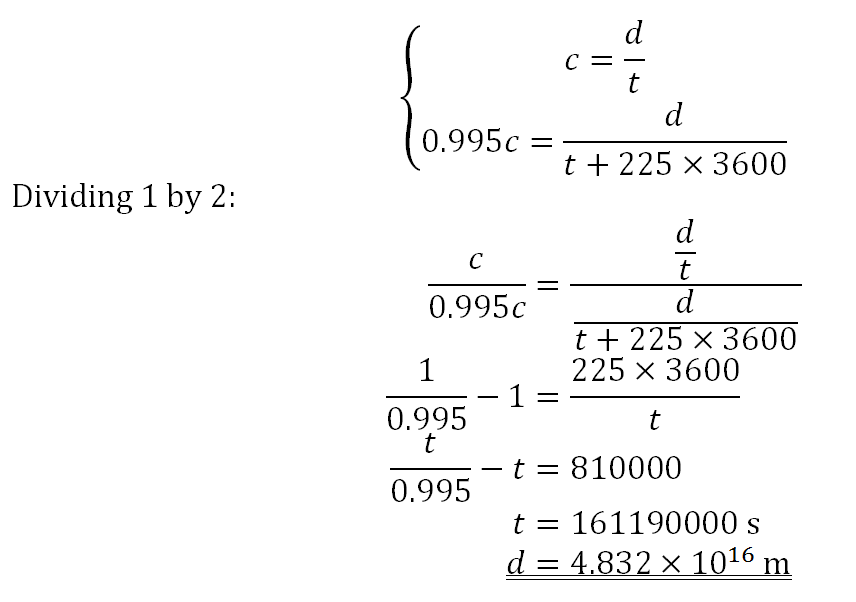

The story of the Dyeing of the Moons is well known and everyone knows it (that is, anyone
who is authorized to know about it knows it). It's a simple tale of disgruntlement that
escalated into hilarity. Strangely enough, no two versions have the same names for
each character in the story, save the Empress Regent on High (you know, the top dog lass
– things were named differently then), which is always referred to by her moniker. Because
of this, the prose has been written to avoid it, and where it cannot,
they have simply been given numbers in this rendition, and they look
like this.
Background: The Art of Saucemaking
The two moons of Alternia have long since been lived on and colonized – Orveo was colonized
in −8544 PD, and Tempai not much later, in −8480 PD. The two moons were of course the familiar
silvery color that a majority of celestial bodies were at the time.
Eventually whole societies are built on the two moons. First came the scientific research
colonies. Then came the industries hungry for new unexploited land. Finally came regular people
with day jobs and eventually lived permanently on the moons.
One of the most important
industries however is the dye industry. It is known that Alternian dye is mainly created
via the highly suspectly-named "grub sauce" – this is of course, to put it bluntly, powdered
baby blood. Nope, nothing wrong with that. However, this creates a quantity inequality. Troll
blood is not evenly distributed among the eleven "castes" – there are two cinch points where
the quantity produced via "saucemaking" is in the order of
mL year−1:
−2
−1
±0
+1
+2
+3
+4
+5
+6
+7
+8
The haemospectrum, with Þ-values.
Jade blood (Caste value Þ = +2), in the middle of the pack, is
notoriously difficult to find, having a population density of about 20 ~ 30 ppb (only
rivaled by royal blood, seen below). Trolls with jade blood are oddballs anyway, and
their extreme rarity makes their culling very rare. In any given
year the paintmaking industry can make up to 40 L of jade
paint from blood.
Royal blood (Caste value Þ = +8), at the very pinnacle of the so-called
"hæmospectrum", is by its name royal, rare and reserved. Not only does it appear severely
sparcely (with density of about 750 ppt – to make this clear this is 0.000 000 075 0% or
three cases every four billion births) it's also one of those things that
require extreme bureaucracy to handle – only when the reigning Empress/Emperor is absolutely
certain to be in the pink of health will the royal-blooded grub be culled. This means that
out of the approximately 11500 years that the paintmaking
industry has existed, a grand total of 30 L of pink dye has ever been created out
of blood, yielding a production rate of
2.609 mL year−1. No one can afford dyed royal blood
like that – the whole of Alternia has to contend for on average enough of such
paint to fill about four M&M candies – and the Empress has made it so as well – selling
any pink dye marked as paint derived from royal
blood is prohibited under penalty of death/culling/whatever term you want to use for
legislated life termination.
There are other paint colors that are derived from Troll blood as well, like for instance
bright red, olive and pure black, and some of these colors can almost as rare as jade blood
(not royal blood however), but those are of secondary concern to our story. We can safely
say that the production rate is in the region of
ML year−1, fulfilling their niche market.
All that paint deficit has to be released somehow – color is important in Troll
society. So what does one do, when your primary source of color fails? Look for secondary
sources or make a synthetic version. Jade paint is solved by the former, the more
expensive synthesis of royal paint by the latter. Jade paint is very wonderfully solved by
mined materials like crystals and minerals, and the right mix of chemicals required to make
royal blood-colored dye is finally constructed sometime −9000 PD, opening up the full standard
hæmospectrum for all to draw with. All is well.
There is, however, one tiny snag in the plan – overproduction. The creation of these once-rare
dyes ranged in the realm of up to 1 TL year−1,
completely outstripping the most common colors up to seven times. This appears to be an
oversight by some poor old cog in the paintmaking machine with the name of
1, who accidentally tapped the "000" key once too often.
He was subsequently culled. Nevertheless the overproduction
went on for over 80 years before it was brought down to the gigas from the teras.
All that extra paint had to go somewhere though. There's so much paint that the incinerators
can't handle them without completely disabling their ability to burn anything else, and anyway
you can't burn dye or paint. So it appears the only solution is to send it to the moon.
Both of of them, in fact. The smaller Orveo gets the less-produced pink dye; the larger
Tempai gets the more-produced jade dye. The dye then is managed by several hapless Trolls
that ensure that nothing bad happens to the pile of paint.
The summers go and the winters come, and after three hundred or so years the collective
artistic temperament of the Trolls have caused them to steer into using a lot of these dyes
(whether this is a mind-control exercise or merely a coincidence can be a hotly-debated issue).
in any case, the demand of this actually managed to almost deplete the pile, and the
now-burgenoning Command, Conquest & Compile Company which is responsible for many of the
troop-commanding, planet-conquering and resource-compiling that happens in Troll military
records is sent to get malachite and materials to make quinacridone to match the demand,
which has by then actually grown to be about 2 TL year−1
due to the increasing population. (At this point common colors have also passed the teralitre
mark.)
All that incoming dyestuff is then stored on the two moons because there's already a large pile.
The originally-easy jobs of simply maintaining the pile and occasionally extract some out of it
has now become a nightmarish job of looking for impurities in the incoming dye, ensuring that
no dangerous explosives come into the giant tank, and other similarly bureaucratic jobs. At
least that gave plenty of employment for the poor things that live on the two moons.
We then go on a few dozen years, as this has pretty much completely set up the stage for the
Incident to occur.
The Oldest Trick in the Book, with Relativistic Twists
Days before Incident
Requests
Incoming
Outgoing
7
225
901
6
293
750
5
303
710
4
910
1031
3
744
996
2
381
810
1
450
750
0
356
805
Incoming and outgoing requests in the Green Container up to
7 days before the Incident
A crew of five was manning the malachite containment warehouse.
It was a boring night, but not an eventless one – they had 356 input requests and 805 output
requests to handle, which is pretty much par for the course here. They were headed by
2. They were rounding up the last requests of the day.
Far, far away several years ago, a Tributatry State paid its daily tax to the Alternian
Empire in the form of pure money, dye and explosives. As usual, the tax was placed into
little boxes with lots of words yet none of them were identifying; they had strange esoteric
carvings
on the wood and/or metal to identify them. The markings were translated into the content of the
boxes they were on via a database management system, as it always was. And like all good DBMS
systems, they had a guy whose only existence is dedicated to punching numbers into it. And
because he's only ever good at punching in numbers, the actual marking and data creation was
done by a group of runner-guys. 3 was one of those people that day.
3 was unhappy. He was unhappy because he wasn't a Troll. More
specifically, not being a Troll, he couldn't rise to the uppermost echelons of the society they
constructed. He wanted to, and he wished to express that. Naturally, the best way to do that
was to mess up their society.
So that day, he marked the largest box of explosives that he can find (the explosives are
strange ones that can blow the contents out of the house while leaving the house more or
less intact save from a giant hole on the top) and marked it as "malachite", and a harmless
box of malachite as the explosive – the name of the explosive appears to have gone missing in
all versions of the story – as malachite. The error is propogated up and out, and eventually
back to Tempai.
Back in the Tributary State, 3 did some final alterations
to the box of "malachite". The box now had some extra "features" that allow it to be detonated
with some kind of electrical signal. All it needs is that signal. The following week, almost
exactly 300 hours after the ship left the dock, the deathly signal was sent.
You can see where this is going already. The package is shipped from the tributary to
a docking station just outside Alternia not much later, and from there, it goes to through
customs to the storage facility. The entire process lasts about fifteen hours and is otherwise
uneventful if you can ignore the fact that a high explosive is placed in a location that has
no blast preventation to whatever capacity.
And stay there it did, until about 75 hours after the suspect package settled into the storage
room. At that time, at exactly −7977.9135181 PD, it blew up spectacularily, with total energy
output at about 300 tons of TNT. The explosive did pretty much exactly what it was expected to
do: it blew out almost all the windows on the building, as well as the ceiling. There was enough
force to take the top off, and spill the green stuff all over the moon on a 3 km radius.
Could 2 hear it? Can he hear it not; he was blown clear out of his
bed (or whatever equivalent Trolls have, what with the funny cocoon thing filled with green
goop)! The team assembled with the usual efficiency and discipline, and came around to the
blast zone, stained green from the dyestuff. With only the dim reflected light from Alternia
to illuminate the scene, the sight is eerie and quite surreal: a large but fairly dim light bulb
hangs in the sky, lighting up a sea of green and grey that crunches when you walk on it (fairly
painful as malachite is sharp!) Far above, the stars shine, untwinkling, complicating
the shadows just a little bit more. Planetshine from Vemapaid and the two gas giants add
their own shadows, imperceptible to humans but visible to Trolls.
Picturesque descriptions aside, this mess managed to stretch over 30 km in radius around
the now-open-top dye storage facility. The green mess, weighing over a megaton (one million
tons or a billion kilograms, 1012 g) all in all,
has actually created a sizeable dent in the moon. Though it is imperceptible to both Troll and
Human, without this weight the ground is starting to rebound, meaning that the green dyestuff
is growing larger all the time.
The situation looks dire. The manager cannot possibly clean this up in time; the orders will
come in, exploded storage facility or not. Sure enough, a new extraction order has come up.
How inappropriate was the quote that 2 had as he grumbled
and retrieved the order form.
It was from the royal house.
Knowing that this kind of thing only happened on average once a year
did not help with his feelings any one bit.
Aftermath
Needless to say the Empress was less than pleased about the whole development, though unlike
most other Empresses she was not to fly into a blind rage and call her cronies to immediately
terminate everyone involved on the spot. Instead, in a rarely-taken move, she did the "regular"
route and started up an Incident Investigation Group and left it at that. Things went on as
regularly as such a contingency would be, and in the end, the correct person was blamed and the
correct armies were dispatched. Unfortunately, the person they wanted to find died four years
before they arrived due to natural causes – stupid speed-of-light limit! – so they
left it at that.
This fairly lax attitude was quite a surprising turn of events, though not unwelcomed,
especially by the would-be victims of the once-thought-to-be-inevitable big culling spree.
What will happen next after this is even more surprising.
The Short Term: Rake of the Century
First of all came the order to get more malachite and start making the mess bigger. This is
of course on the order of the Empress herself, and because there's no contradicting the Empress
her will was done, and eventually a sizeable chunk of the body came around to be tinted green.
That wasn't all though. Almost as if highlighting that this is a highly unusual event, the
Empress continued and upscaled the amount of dye production, and stopped all reconstruction
efforts of the storage facility. The incresing amounts of dyestuff are simply dumped into the
moon, indiscriminately and almost casually, which is quite a change from when things
were all managed almost to a bureaucrat's wet dream.
Things get more and more off-track as eventually even the up-until-now unaffected pink dye
storage facility was ordered to be blown up in much the same manner as the stricken malachite
bar. The command was met with much amusement from the people who actually acted out said
commands, but when the same Empress then went on to order the increased production of
quinacridone, the intentions, also accentuated by the command to systematically paint every
exterior wall of all artificial structures in their respective colors, were made so clear that
not even the best vacuum glass of
Tsepraki could match it. We're talking about
n = 1.00000001 here, people!
The Long Term: Rake of the Eons
In case you were not clued in by the copious amount of clues that have been laid out in the
foregoing paragraphs, what the Empress was planning awas essentially developing the two moons
into truly enormous tourist traps. Of course there are auxiliary motives behind the move too,
vague things like "demonstrate the national strength" and "turning a scandal into something that
looks like it was planned all along", but those are pretty much all just boons that come with
having two oddly-colored celestial bodies.
In a way, it worked. Much money have flowed into the coffers of the Empress in such a way, with
the return being around 350% year−1 (i.e. for every, say,
$1 that the Empress spends on blowing up storage tanks and whipping the miners some more
each year, $3.50 a year comes back from
the resulting tourist trap) and as such the Empire can afford to look generous by reducing the
burdensome tax system. With that, the overall reputation of the Empire went up to
previously-unseen heights,
and while Trolls never cared about this "reputation" thingy they know all too well that it's
a useful construct to their perhaps pointless end of dominating Everything, so they are not so
foolish as to completely disregard it entirely.
The whole project is not without its faults of course. These feats of extravagance were quietly
derided by Parasites (basically, the inhabitants of the "nail planets" you learnt about in
Section A), virtually safe from retribution because of their almost inexhaustable supply of
one or more of time, resources or tactics. This strange Dyeing of the Moons, no matter how
technologically amazing it might be, doesn't really project a good light on the Trolls, who
now has to deal with calls of splurging and being told they can't run an Empire worth anything
even if they can conquer a vast one (kind of like Alexander the Great actually). Clearly,
you can't please them all.
All in all, the whole story got a relatively happy ending – a rare occurence in Trolldom, at
least with our preconceptions of a "happy ending" – and most everyone managed to escape the
saga with their heads firmly attached to their bodies.
Bonus Question Answer and Solution
Answer: 1.57 pc.
The diagram required to solve this problem
One can imagine that the signal and the ship track straight lines in spacetime, starting from
the Tributary State and ending in Alternia. After transforming the coordinates so that
Alternia at the time of the explosion is on (0, 0), two lines are formed by the signal and
the ship, OS and AL respectively. We shift AL left 75 hours to OL’, so now we have two lines
passing through the origin.
After that, it's a simple bit of algebra:

And now that we have the time required in our regular reference frame, all we need to do is
to plug in a simple formula: